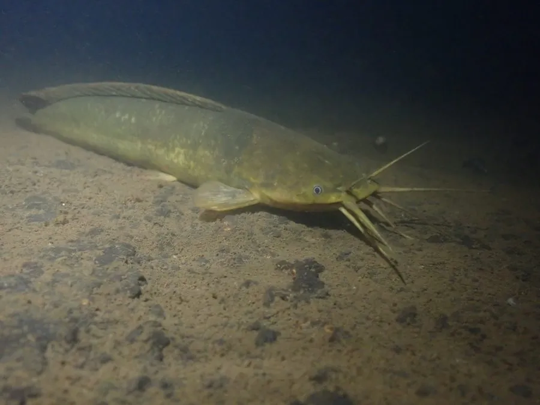

鱼类 · 动物界
胡子鲶 Clarias fuscus

中国南方的淡水鲶鱼，口周有 4 对须，能直接呼吸空气，耐低氧、离水存活久，是常见的养殖和食用鱼。
- 分类
- 门脊索动物门纲辐鳍鱼纲目鲇形目科胡子鲶科属胡子鲶属
- 栖息环境
- 南方河流、池塘、沟渠和稻田，偏好淤泥底质和缓流
- 地理分布
- 中国南方、台湾及越南等地的淡水水域
- 保护级别
- IUCN 无危（LC）；中国未列入国家重点保护野生动物名录
物种志
胡子鲶体呈长圆筒形，头部平扁，口大，口周有 4 对细长的须，其中上颌须最长。体表无鳞，皮肤光滑，体色灰褐或黑褐，腹部浅灰。背鳍很长，胸鳍有硬棘。成鱼体长一般 20–30 cm，最大可达 60 cm。
胡子鲶分布于中国南方、台湾、越南等地的河流、池塘、沟渠和稻田，喜欢水流缓慢、淤泥底质的环境。它有辅助呼吸器官，能直接呼吸空气，因此耐低氧，离水后也能存活较长时间，雨季还能在潮湿地面短距离移动。胡子鲶是杂食性鱼类，吃小鱼、虾蟹、昆虫、螺蛳和植物碎屑。它是南方常见的养殖和食用鱼，肉质细嫩，常用来煲汤。目前 IUCN 评估为无危。
形态与习性
- 食性杂食性，吃小鱼、虾蟹、昆虫、螺蛳和植物碎屑
- 体长一般 20–30 cm，最大可达 60 cm
- 呼吸有辅助呼吸器官，可直接呼吸空气
- 耐受力耐低氧，离水后能存活较长时间
- 触须口周有 4 对须，上颌须最长
- 经济价值南方常见养殖和食用鱼，肉质细嫩
趣味知识
- 胡子鲶能直接呼吸空气，所以能在缺氧的池塘里存活。
- 离水后它还能存活较长时间，雨季可在潮湿地面短距离移动。
- 它口周长着 4 对须，像胡子一样，因此得名“胡子鲶”。